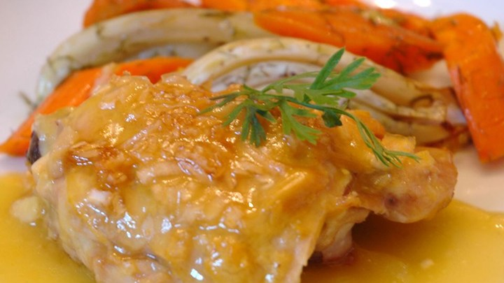
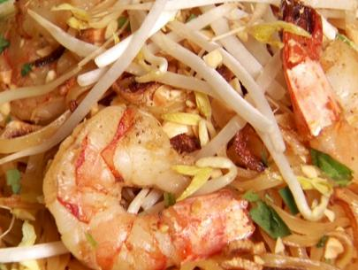
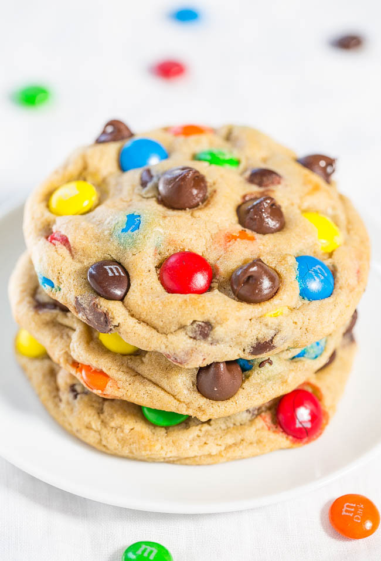

Orange Juice Chicken

- Prep Time: 15 minutes
- Cook Time: 45 minutes
- Ready in 1 hour
- Serves 4
Ingredients
- 4 skinless, boneless chicken breast halves
- 2 tablespoons prepared Dijon-style mustard
- 1/2 cup chopped onion
- 1/2 cup packed brown sugar, divided
- 2 cups orange juice
- 2 tablespoons butter
- 2 tablespoons all-purpose flour
Pad Thai

- Prep Time: 20 minutes
- Cook Time: 25 minutes
- Ready in 45 minutes
- Serves 2
Ingredients
- 4 tablespoons vegetable oil, plus extra as needed
- 1 teaspoon chopped garlic
- 1 tablespoon dried shrimp, optional
- 1/2 cup sliced pork
- 1/2 cup whole shrimp, shelled and deveined
- 1 tablespoon (shredded) preserved radish
- 1/4 pound medium-size dried rice noodles (soaked 60 minutes in cold water and drained)
- 2 large eggs
- 1/2 teaspoon ground hot chiles, or more to taste
- 2 tablespoons ground roasted peanuts
- 1/2 cup sliced garlic chives or green onion
- 2 cups bean sprouts, rinsed, plus more for garnish
- 1 wedge lime
- 1 cup tamarind juice
- 1 cup palm sugar plus 3 tablespoons
- 1 cup water
- 1/2 cup fish sauce
- 2 teaspoons salt
M & M Cookies

- Prep Time: 10 minutes
- Cook Time: 10 minutes
- Ready in 3 hours (dough chilling)
- Makes 11 cookies
Ingredients
- 1/2 cup unsalted butter, softened (1 stick)
- 1/2 cup light brown sugar, packed
- 1/4 cup granulated sugar
- 1 large egg
- 2 teaspoons vanilla extract
- 1 1/4 cups all-purpose flour
- 1/4 cup instant vanilla pudding mix
- 1/2 teaspoon baking soda
- 1/4 teaspoon salt, or to taste
- 3/4 cup M&M'S, plus more for adding to dough mounds
- 1/2 cup semi-sweet chocolate chips, plus more for adding to dough mounds